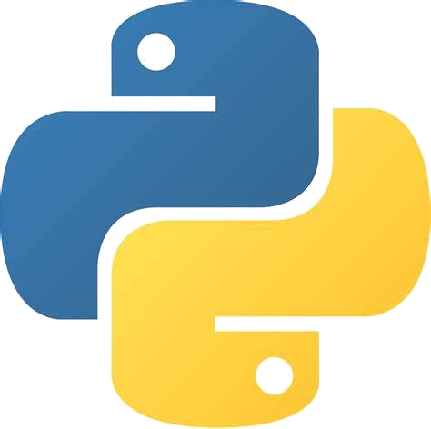

Ashwin Kumar Karnad
RSE, MPSD
Self Introduction
- MSc Physics + BE Electronics and Instrumentation from BITS, India
- Cryogenic probe: NISER, Bhubaneswar
- Simulation of a reticle missile and its deflection: DRDO, India
- Simulation of a BMS for EV: Kaynes, India
- Master's Thesis on Josephson Junctions at NISER
- Research Software Engineer at MPSD, Hamburg
- Software / Electronics Hobbyist
Electronics projects
Work as a Research Software Engineer

Server room at MPCDF PC: Prof. Hans Fangohr
- Prof. Hans Fangohr
- Max Planck Institute MPSD, Hamburg
- 2022 onwards
Postopus : POST processing of OctoPUS data
 Post processing of Benzene DFT calculation| Post processing of Benzene DFT calculation |
Postopus : POST processing of OctoPUS data
Post processing of Benzene DFT calculation| Plot forces on Benzene electron density |
Postopus : POST processing of OctoPUS data
Post processing of Benzene DFT calculation Slice of Benzene electron density |
ML on micromagnetic configuration
 The energy density difference between identified equilibrium states and the corresponding ground state. [Beg, M., Carey, R., Wang, W. et al. Sci Rep 5, 17137 (2015).] |
 Example magnetic configurations
Example magnetic configurations PC: Swapneel |